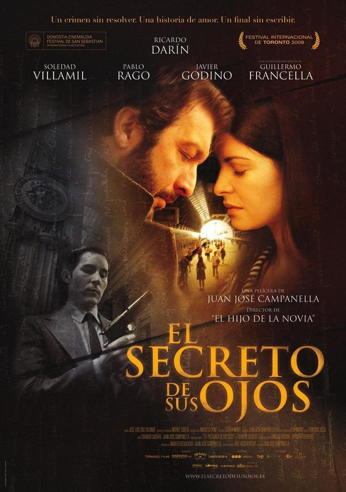

Director: Juan José Campanella
Año: 13 de agosto de 2009
Duración: 2h 7m.
Género: Suspenso/Crimen
Benjamín Espósito es oficial de un Juzgado de Instrucción de Buenos Aires recién retirado.
Obsesionado por un brutal asesinato ocurrido veinticinco años antes, en 1974, decide escribir una novela sobre
el caso, del cual fue testigo y protagonista.
Reviviendo el pasado, viene también a su memoria el recuerdo de una mujer, a quien ha amado en silencio durante
todos esos años.
